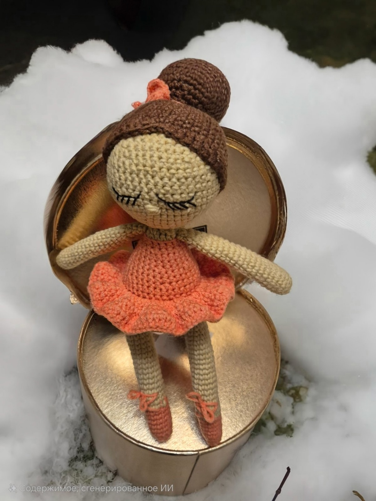
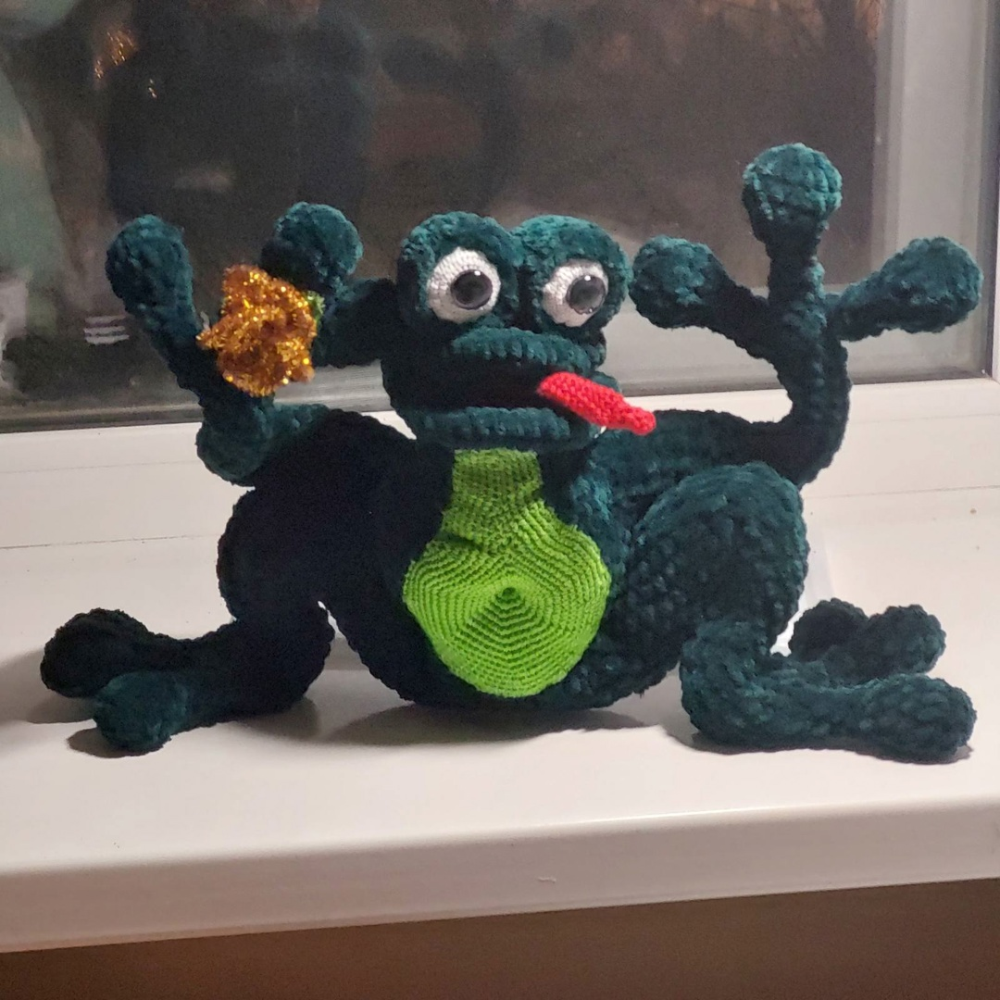
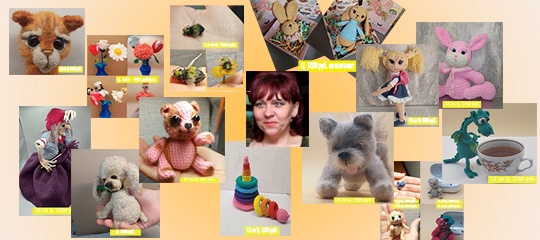
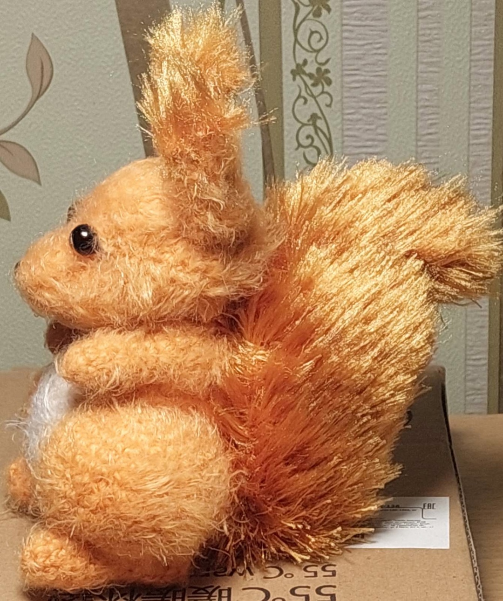
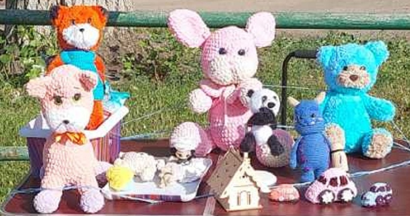
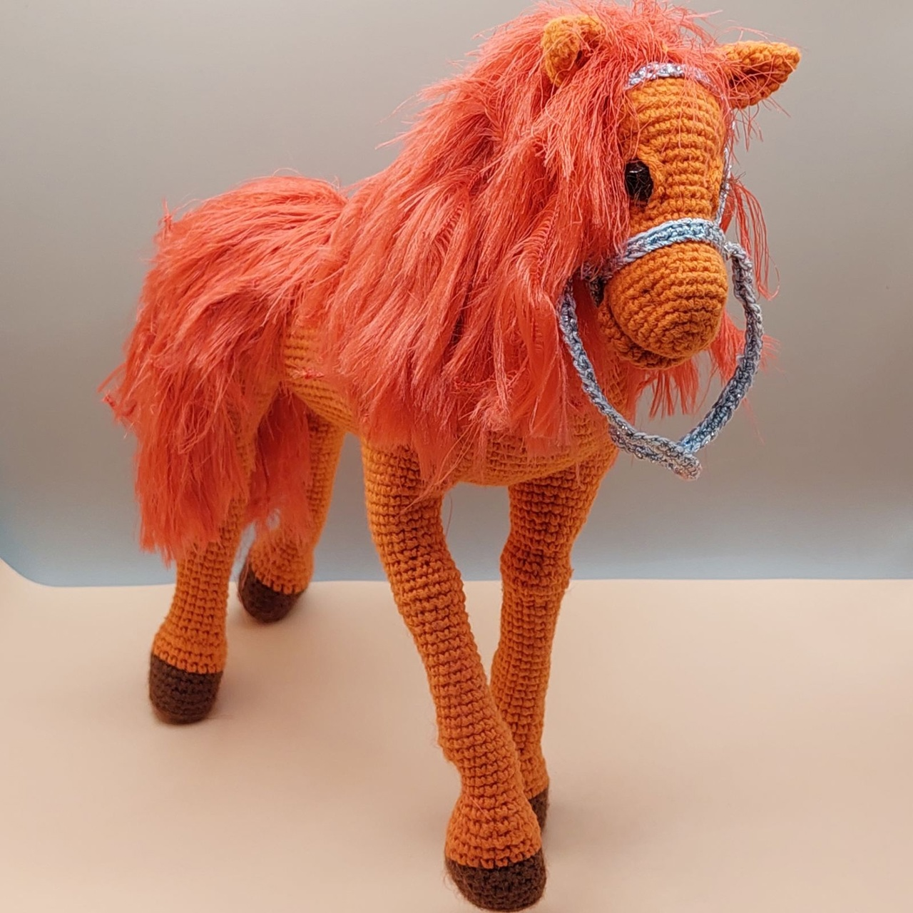

До курса продаж и постоянных клиентов не было, только редкие заказы с ярмарки мастеров. После прохождения курса и внедрения новых стратегий, начала получать регулярные заказы, появилась очередь на изделия, и появились постоянные клиенты.
Доход значительно увеличился, позволяя наслаждаться любимым делом и обеспечивать дополнительную прибавку к пенсии.
Вязальщица Надежда Орехова из Самары поделилась своими результатами после курса ВК бабло.
— Надежда, можешь рассказать, что было до курса, какой средний доход был в месяц? Были ли клиенты?
— Говорить о доходах ДО вообще не стОит. Потому что продажи были нерегулярные, совершенно спонтанные. Как таковых, заказов не было, только случайные продажи с лотка на улице или на сайте Ярмарка Мастеров. То есть, клиентов в моем понимании – людей, которые заказывают у меня то, что им нужно, не было совсем.
— Какие сложности были во время обучения на нашем курсе? Насколько сложно было учиться? За сколько прошла обучение?
— Сложностей, как таковых, не было. То, что я совершенно не ориентировалась в ВК, вполне решалось за счет очень подробных первых уроков курса. В них разберется даже дошкольник, при условии, что он умеет читать.
Подробные скрины, пояснения текстом не давали никаких возможностей для разночтения. Поэтому интерфейс сервиса я поняла довольно быстро.
Обучение проходила довольно активно в первые два месяца. При полной поддержке с куратором до окончания курса не хватило буквально 4 последних урока. Для моего темпа – максимум, на пару недель.

Но в это время активно пошли заказы, поэтому дорога была каждая минута. И я намеренно решила прерваться, поддержка куратора на заключительных уроках уже не так важна.
Вернулась к обучению, чтобы его завершить, уже через 2 месяца, когда сезонность заказов пошла на спад. Появилось свободное время, и я смогла закончить курс. Итого на весь курс ушло 4 месяца. Хотя можно было уложиться и в 2 – абсолютно реальные сроки.
— Что можешь сказать о кураторе, что было полезно, мотивировало ли это тебя? Как считаешь, без куратора получилось бы так же?

— Мое убеждение - курс настолько хорош и понятен, что поддержка куратора не обязательна. Разве что для самоуспокоения, что взял от курса по максимуму. Но не могу сказать за всех. Возможно, это лишь мне, другим он был бы нужен. Я активно пользовалась поддержкой только в самом начале, по интерфейсу ВК.
— Какие сейчас действия делаешь для привлечения клиентов? Как часто пишешь посты? Запускаешь ли рекламу?
— Посты пишу время от времени. При моем ремесле постоянная открутка рекламы совершенно не нужна – я работаю одна, а на изготовление одного заказа нужно время. Даже на самый простой и дешевый заказ нужно не меньше суток. Поэтому при наличии заказов я просто отключаю рекламу.

Я не буду врать и говорить, что заказы прям сыпятся один за другим десятками. Нет, конечно. Но вот с декабря я была так загружена, что народ стоял в очереди.
Кстати, всего неделю назад последний заказчик получил свои игрушки, которые заказывал аж в конце ноября. Кто мог подождать, те запаслись терпением и ждали.
Но и при таком распределении я работала, можно сказать, не покладая крючка. Поэтому рекламу я до апреля вообще не включала.
А еще появились постоянные заказчики. Это особенно приятно – значит мои работы нравятся, их ценят. До того, как я начала работать по курсу ВК бабло о таком я и подумать не могла. Для меня каждая продажа был как награда, про повторные заказы и речи не было.

— А можешь поделиться, как изменилась жизнь, когда увеличился доход? Может что-то купила себе? Съездила в путешествие? Что-то смогла сделать, чего раньше не могла позволить себе?)
— Вязаные игрушки – это хобби, за которое еще и платят. Давайте посчитаем. Простую игрушку я могу связать примерно за день. При условии, что у меня остается время на жизнь и отдых.
То есть, если вязать такие игрушки каждый день без выходных, это максимум 30 тысяч в месяц. Интерьерные игрушки, конечно, дороже. Но и времени на них нужно существенно больше. В месяц где-то около 50 тысяч получится.

Этот дополнительный доход можно расценивать как хорошую добавку к пенсии. Чтобы побаловать детей и внуков, потратить деньги на себя: сделать прическу и маникюр, сходить на массаж, в мои любимые термы.
Да, это не слишком большие доходы, но их хватает на то, чтобы дарить маленькие радости себе и близким и дорогим мне людям. И особенно приятно, что мои игрушки приносят радость моим покупателям. А положительные эмоции – это здоровье. Так что, можно сказать, что дополнительный доход еще и оздоравливает, причем, не только меня, но и моих клиентов)
— Все, остался только вопрос, сколько сейчас зарабатываешь? Сколько в среднем в месяц? Сколько клиентов? А вот примерно сколько за год было прошедший заработано?
— В среднем получается 35-50 тысяч. Число клиентов никак не посчитать по среднему. Зависит от сложности заказа. Вот для примера: Из картошки можно приготовить картофель в мундире, жареную картошку или картофельные пирожки. Время на них потрачено разное, и трудозатраты тоже разные. Хотя исходный продукт/материал один и тот же. И с вязаными игрушками так же. Если заказы несложные, то и до 10 клиентов в месяц может быть. Если процесс предстоит длительный и трудоемкий, то может быть всего один заказ в месяц. Как тут посчитать среднее количество? Люди же все разные. Заказчики не ходят строем, заказывая все как один только простые игрушки или исключительно дорогие и сложные. Как-то все перемешивается. Давайте будем считать, что в среднем у меня 5-6 клиентов, которые приносят в месяц от 35 до 50 тысяч.

Игрушки стали моим постоянным дополнительным доходом лишь с ноября прошлого года. До этого продажи были редкими, случайными, и рассчитывать даже на минимальный доход от них не имело смысла. Что-то, конечно. продавалось. С лотка на улице, через знакомых, через Ярмарку Мастеров. Я не вела учета, и сказать, сколько удалось на этом заработать, не могу. Хорошо, если получилось окупить материалы. Давайте будем считать, что в прошлом году заработка у меня не было)
— Надежда, спасибо тебе за ответы) Я рада, что твое хобби приносит тебе не только удовольствие, но и, пусть пока не большой, доход. А главное - удовольствие тебе и твоим клиентам!